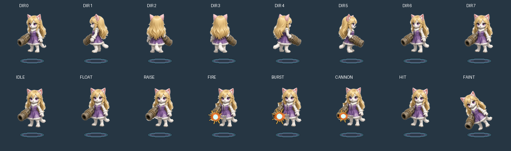
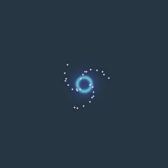

199客户端与构建测试
20真实Chromium检查
98px角色主体高度
49匹配嵌入文件
技能与战斗边界
5次远程单体，每发重新随机当前合法活敌；独立15%–18%原生物理伤害系数。每发先等概率选择麻痹或驱离，再按20%–50%或10%–30%的条件概率判定，同一发两者互斥。
原地举炮，逐炮结算。保护PvP、NPC/事件、禁逃楼层与特殊敌人；死亡和离场后不再被后续炮击选中。沿用镜守、防御、守护、骑宠与反射规则。
完整验收 · 服务端红绿与边界 · 客户端验证 · 研究依据
原生八向与位图动画
232角色帧、24电磁特效帧；猫耳微动、漂浮、右手炮筒举起与近爆。主体98px与莉莉丝一致，约为雷龙正面145px的2/3，透明帧格不计入身高。

八个原始方向保留右手炮筒，没有用镜像换手。
240×240原生RGBA电磁爆炸，逐炮独立播放。用户JPG透明提取、局部耳/炮筒变形与程序位图特效，未调用图像生成API。五文件素材补丁可复现、原子安装，原Assets不进入仓库。
发行一致性
Go全量、vet与定向race通过，重复构建ELF一致。ZIP逐项匹配公共文件，旧ZIP已替换；三个素材安装器修复USTAR末尾填充边界，摘要、白名单与冲突保留继续有效。
Linux AMD64 SHA-256
06fec5241088b2be63987021dd007c96411e79e696c5185d21e803a1dbc982aa
ZIP SHA-256
3a689fe196d189d8293635687284adffc19d79e772fd1ed320d068bf79162daa
机器发行清单 · 隐私检查
验证边界
实际Linux ELF、原素材、WebSocket、隔离SQLite与Chromium。SwiftShader渲染，移动触屏和屏幕尺寸为模拟；未认证实体Android/iOS、Safari或系统安全区。受控敌群仅存在私有验收目录，正式自然分布另经原生Picker采样。
伤害系数仍受原生防御与属性影响；麻痹/驱离先二选一，再按条件概率触发。角色动画由参考图分层变形，未声称重绘全部姿势。